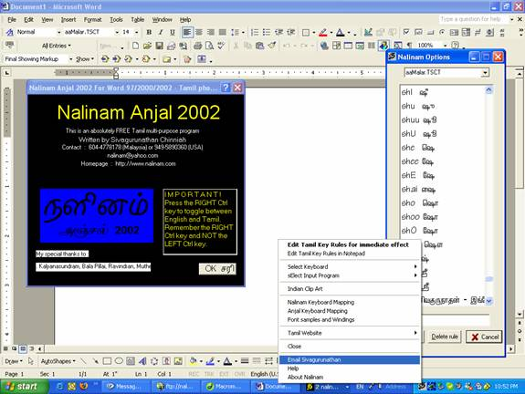

Hello, thank you for your interest in the most advanced Tamil input system in the world!
Anjal 2002!
Instructions:
a. Download the nalinam.exe file and it will automatically downloaded and installed
b. Click on Nalinam Anjal 2002 on the desktop and it opens up MS-Word
c. Start typing in Romanized tamil
d. You should see a BLACK 'ta' (see screen shot below) tamil symbol on the bottom right of your desktop.

e. Right click to choose other advanced features
f. Define your own keyboard and add more rules if you want to for the more advanced user
g. Press the RIGHT Ctrl key and you should be able to type in tamil in MS-Word or any windows based program. If you want to go back to english press the right Ctrl key again. Note : The left Ctrl key has no effect!
h. Enjoy tamil and have fun